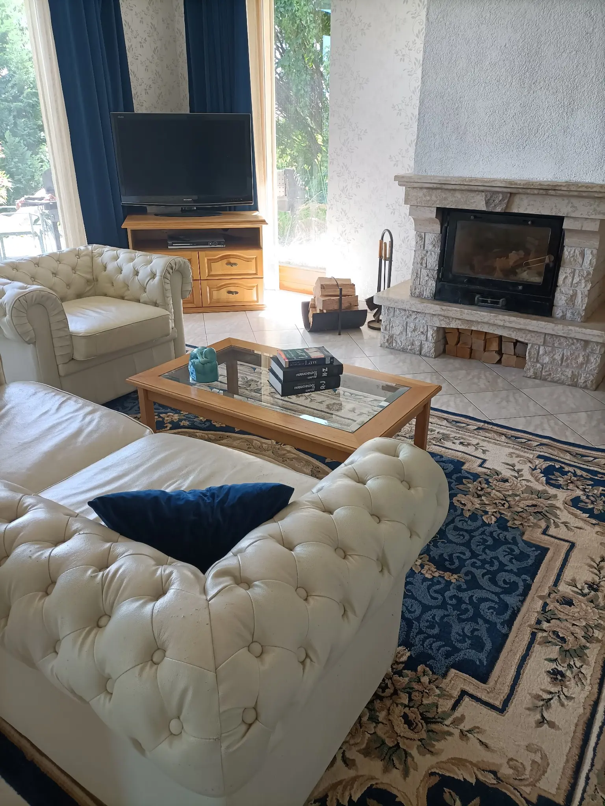

Egyéni ügyvédként 1991 óta vagyok a Budapesti Ügyvédi Kamara, majd a Pest Megyei Ügyvédi Kamara tagja. Ügyvédi praxisom mellett egyetemi tanárként oktatok a Nemzeti Közszolgálati Egyetemen. Tudományos és oktatói előmenetelem mellett mindig fontos volt számomra, hogy ne csak a tudomány „elefántcsont tornyában” méressem meg magam, hanem a joggyakorlatban is. Ezért a joggyakorlattól sem szakadtam el, ügyvédi tevékenységemet az elmúlt 35 évben is fenntartottam. Egyetemi oktatóként kezdetben négy évig büntetőjogot tanítottam, majd később közigazgatási jogot és alkotmányjogot. Tudományos szakterületemet, az államtudományt, ezen belül a közigazgatást, és a gazdasági kormányzást jól tudtam hasznosítani azokban a közjoghoz kapcsolódó ügyekben, amelyeket ügyvédként vállalok el. Mindamellett hű maradtam a büntetőjoghoz is. Ügyvédi praxisomban ellátom ügyfeleim (magánszemélyek és jogi személyek) képviseletét bíróság előtti perbeli és peren kívüli, valamint közigazgatási eljárásokban, jogi segítséget nyújtok, tanácsot adok, elkészítem és ellen jegyzem a szerződéseket és más dokumentumokat. Vállalok jogi képviseletet nemzetközi szervezetek (a strasbourgi Emberi Jogok Európai Bírósága és a luxemburgi Európai Unió Bírósága) előtt folyó eljárásokban.
Az Eötvös Lóránd Tudományegyetem Állam- és Jogtudományi Karán szereztem jogi doktori diplomát 1984-ben, majd ugyanott PhD fokozatot 1997-ben. Az ügyvédi szakvizsgámat 1991-ben szereztem meg, és ettől kezdve voltam tagja a Budapesti Ügyvédi Kamarának, majd jelenleg is, a Pest Megyei Ügyvédi Kamarának. Ügyvédi tevékenységem során szerzett tapasztalataim segítettek oktatói és kutatói tevékenységeim fejlesztésében is.
A jogi egyetem elvégzése után a Miskolci Egyetem Állam- és Jogtudományi Karának Bűnügyi Tudományok Tanszékén tanítottam tanársegédként 1988-ig, majd ettől kezdve, jelenleg is, a Nemzeti Közszolgálati Egyetem Államtudományi és Nemzetközi Tanulmányok Karán, és annak jogelődjeinél, az Államigazgatási Főiskolán, és a Budapesti Corvinus Egyetemen, 2009-ben szereztem habilitált doktori címet a Pécsi Egyetem Állam- és Jogtudományi Karán, 2015-ben pedig egyetemi tanárnak neveztek ki a Nemzeti Közszolgálati Egyetemen.
Az 1990-es években Strasbourgban, Firenzében és Salzburgban vettem részt tanulmányutakon, amelynek témája az összehasonlító jog, az európai integráció és az amerikai közjogi berendezkedés volt. 1998-ban Fulbright vendégprofesszor voltam az Egyesült Államokban, a Virginia Politecnic Institute and State University-n, ahol a privatizáció és az egészségügy jogi és szervezési kérdéseit oktattam és kutattam.
Számos amerikai és európai intézmény kutatásaiban is részt vettem részt az elmúlt három évtizedben. A legfontosabbak, American Society for Public Administration, American National Forum Foundation, The Network of Institutes and Schools of Public Administration in Central and Eastern Europe, Open Society Institute: Local Government and Public Service Initiative, Constititional and Legislative Policy, Commission of the European Communities. Ezeknek a kutatásoknak a témája a közszektor versenyfelügyelete, a közszolgáltatások szervezése, a jóléti szféra reformja, a privatizáció, a liberalizáció és a közigazgatási vezetés volt.
1997-ben a magyarországi World Bank Project Management Unit irodájának jogi tanácsadója voltam, amelynek keretében a magyar egészségügy reformkísérletén dolgoztam. 1999-ben az Egészségügyi Minisztériumban közreműködtem az egészségügyi alapellátás, majd a szakellátás privatizációjával kapcsolatos törvényelőkészítésben. 2013-ban a NATO COE-DAT ankarai kirendeltségén akadémiai tanácsadóként dolgoztam, a migráció és a terrorizmus nemzetközi jogi kérdéseinek területén.
Ügyvédként megbízásokat kaptam az Orvosi Kamarától, a Gyógyszerész Kamarától, a Fővárosi Önkormányzattól, a Pest Megyei Önkormányzattól, a Szociális és Családügyi Minisztériumtól, a Telenor Zrt-től, a Corvinus Egyetem Alapítványától, jogalkotással összefüggő ügyekben, valamint az e-Közigazgatás jogi hátterének kidolgozásában. Közigazgatási szervek ügyvédi megbízásai alapján az Alkotmánybíróság előtti eljárásokban jogszabályok alkotmányos felügyeletével kapcsolatos eljárásokban láttam el jogi képviseletet. A Miniszterelnöki Hivatal által szervezett jogi deregulációs programban, valamint az Állami Számvevőszék állami korrupcióval kapcsolatos kutatásaiban kutatóként vettem részt.
2006-ban a Pest Megyei Választási Bizottság választott tagja voltam, 2018 és 2022 között pedig a Nemzeti Választási Bizottság póttagja. Elnöke vagyok a Magyar Jogász Egylet Európai Unió Joga szakosztályának. Szerkesztőbizottsági tagként számos hazai és nemzetközi tudományos jogi folyóiratnak dolgozom, lektori feladatokat ellátva.
Ha bármi kérdése van keressen az alábbi elérhetőségeken.